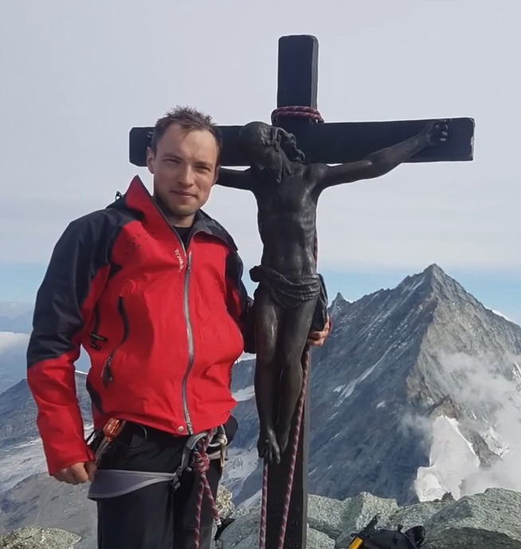
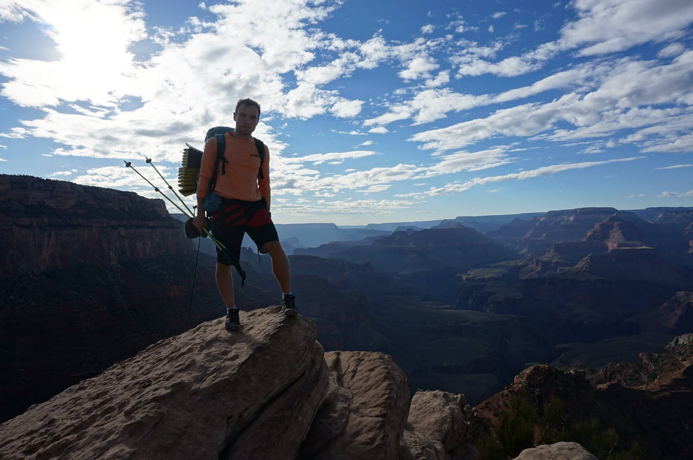
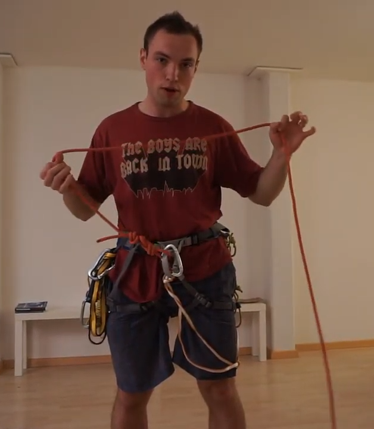
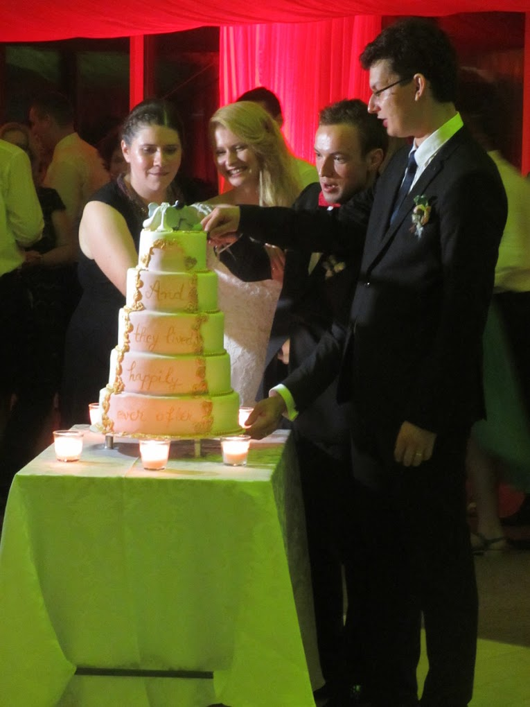
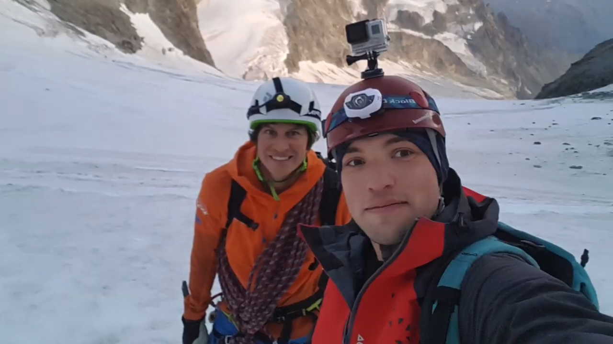
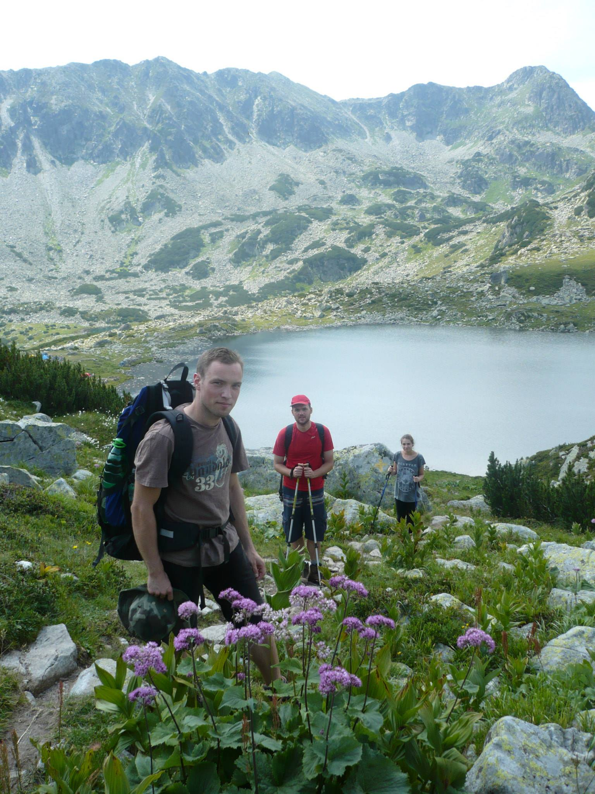

Memories of Octavian
MIT News
Remembering Octavian-Eugen Ganea, a gifted MIT postdoc AI researcher and beloved colleague
https://news.mit.edu/2022/remembering-octavian-eugen-ganea-0707The brilliant scientist was known for both the depth of his intellect and his kindness. Octavian-Eugen Ganea, a gifted postdoctoral artificial intelligence researcher at the Abdul Latif Jameel Clinic for Machine Learning in Health (Jameel Clinic) and Computer Science and Artificial Intelligence Laboratory (CSAIL) passed away during a hike in French Polynesia on May 26. He was 34.
Born and raised in Romania, Ganea joined MIT in 2019 after receiving his PhD in computer science from the Data Analytics Lab at ETH Zurich. While at MIT, he worked with CSAIL professors Tommi Jaakkola and Regina Barzilay; Ganea was focused on bringing geometric thinking into machine learning to accelerate drug discovery, and had plans to continue this work as a tenure-track assistant professor this coming fall at NYU Courant and NYU Tandon.
“Octavian was a brilliant scientist whose research broke new ground in machine learning, bridging the gap between physical and neural views on molecular representations,” Barzilay says. She describes Ganea’s research on geometry-informed algorithms for molecular modeling as “mathematically clean, elegant and effective solutions for problems which are commonly solved with heuristic approaches. The transformational impact of his work ranges from material design to drug discovery.” Besides Ganea’s technical excellence, Barzilay was impressed by Ganea’s “kindness and care for others, [which] brought light to the lives of many people at MIT and beyond. We miss him so much.”
Jaakkola adds that Ganea’s passion for impactful research stood out: “He loved mathematics and geometry but wanted the theory to count for something, impact people." Jaakkola also observes that as a researcher, Ganea was “a force of nature, his positive intellectual energy ever-present and contagious." Even when things didn't work, Ganea would systematically exhaust a problem “with creativity and persistence … He had this rare authenticity and honesty to him as a researcher — seeing and accepting himself, others and his science as they were, never judging,” Jaakkola recalls. “We miss him dearly as a friend, colleague, and mentor.”
Many colleagues remember Ganea’s exceptional modesty, even with his many successes. Upon accepting a faculty offer from NYU, Ganea confessed that he wasn’t sure he deserved it, but many of his colleagues insist that there was no one more suited for the job. “I could not imagine that someone could possibly be more qualified than he was,” second-year CSAIL PhD student Jeremy Wohlwend says. “He was brilliant and determined, yet humble and kind. He would have been an amazing professor.”

Ganea mentored a number of students at MIT and beyond, with many recalling his mentorship as meaningful not just professionally, but also personally. He began mentoring Hannes Stärk, now a first-year PhD student in CSAIL, while Stärk was still in the process of completing his master’s degree in Germany. “I had no papers published and no promising track record,” Stärk recalls. “Just because I showed interest he decided to help me and advise me on a project in October of 2021. Now ... I am certain that I would not be where I am without Octavian — without his generosity, his invaluable advice, and all that I could learn from him about developing ideas, being creative, paper writing, the academic world and research in general.” In the time Ganea spent mentoring him, Stärk always thought it was "astounding how much there was to learn from [Ganea] about research and on a personal level.”
While Ganea was known to have a contagious enthusiasm for his research, he was also deeply devoted to his family. “One day I saw Octavian riding his bike with his daughter, and he stopped to chat with me and [my wife],” recounts CSAIL graduate student Itamar Chinn. “I remember telling her that he is the kind of father I would want to be. Extremely dedicated to his work and his goals but at the same time making family a top priority. They were both so happy biking through Cambridge.” Ganea was also an avid mountaineer and a runner, two hobbies reflecting a persevering attitude that he maintained throughout his academic career.
"Octavian was truly a dedicated and prolific scientist, demonstrated through his passion for computational biology and finding advantageous tools for the medical field," CSAIL Director Daniela Rus says. "He was authentic, full of positive energy, patient and incredibly kind and generous with his time."
ETH Zurich News
Farewell, Octavian Ganea
https://inf.ethz.ch/news-and-events/spotlights/infk-news-channel/2022/06/farewell-octavian-ganea.htmlOctavian’s untimely death saddens us deeply. We have lost a much-loved colleague who, despite his young age, made significant and lasting contributions to the field of machine learning. He was a true researcher, full of energy and creativity and driven by scientific curiosity, who pursued his vision with persistence and remarkable endurance. He exhibited the same mental strength on his mountaineering adventures, which led him to the highest peaks of the Alps.
But he was more than that. In Octavian we have lost someone who was not just a colleague, but also a mentor and friend to many of us. He possessed a contagious serenity and cheerfulness. He was successful, yet remained humble and modest; he offered help, yet never imposed himself. Octavian inspired others through his personality and positive attitude as much as his research. Despite our grief over his death, we want to carry on his enthusiasm for life and cherish the memories of the wonderful time we had together. You would not have wanted it any other way!

Regina Barzilay
Since I learned about Octavian's passing, I cannot stop asking myself why it had to be him. He was not only an outstanding scientist whose contributions changed the field, but also a kind person who gave so much to others and made the world a better place. Judaism provides one perspective: “The death of the righteous effects atonement”, meaning that a demise of such a pure person gives us an opportunity to reset our lives, bringing light to our souls. When I grieve the loss of Octavian, my mind aggregates many daily encounters with him that I didn't give a second thought to at the time into a portrait of an amazing human being. Thinking of these times helps me how to reset in my own life moving forward. I want to share some of these impressions here.
Octavian was brave. By taking a brief look at his climbing pictures, it is easy to see that he was not afraid of physical challenge, and his mountaineering feats were astounding. What is harder to see is his bravery in research. Octavian had enough technical talent to produce many conventional machine learning papers that constitute the vast majority of the material published today in top conferences. It would have been a choice of least resistance. This was not Octavian's style: he focused his intellectual energy on hard problems which are beyond the reach of most and which are likely to change the field. It took him a while to identify the right question, but once he zoomed on it, he was unstoppable. I still remember our zoom conversations during the pandemic with children's noise in the background. Remembering the days when my son was a toddler, I couldn't imagine how Octavian managed to do any work in the house, let alone produce ground breaking research that required superior concentration. His relentless intellectual energy enabled him to move into new research directions, without being diverted by failed experiments and confusion along the way. This emotional robustness and creative power uniquely distinguished him from many technically talented researchers who are held by convention and fear. In his research and his mountaineering, he aimed for the highest peaks.
Octavian was kind and truly cared about others. In his short life, Octavian impacted so many people, both in his immediate environment and beyond. He was working with multiple young students around the world, helping them to find their own research footing. He not only cared about their research progress but also wanted to make sure that they are treated well. He never hesitated to ask Tommi and me to sponsor their trip. The younger students in the group saw him as somebody who can give a new perspective on the problem and help them refine their ideas, without judgment and with a lot of encouragement. In his three years at MIT, I've never heard him saying a demeaning comment. People were drawn to his positivity — by sharing his confidence with others to push forward despite the obstacles. In this terrible week after Octavian's demise, I heard a lot of stories from people at MIT on how he helped them to deal with challenging situations and impacted their lives. I also learned that he worked on a platform for students in rural areas of Romania to give them access to mathematical education similar in quality to the one he had. Octavian generously shared his kindness, ideas and resources never expecting any recognition or reward. He just wanted to make this world a better place for others.

Octavian loved his family. I only once saw Octavian and Marina together. It was a party in my house in the pre-pandemic times. I still remember our conversation — our joint friend was sharing with us his romantic escapades when Octavian and Marina tried to make sense of it. While I don't remember the details, their kindness and care towards each other and that friend are still in my memory. I felt so happy for Octavian that he found himself a true match. Octavian's care for Marina and his family was reflected in many small and big deeds. When he got his first university offer, he knew that he couldn't take it, because it would not work well for Marina's job prospects. It was extremely important to him that Marina succeeds in her career and is happy with a new location. He multiple times mentioned to me how grateful he is that Marina agreed to come to the US when he wanted to do a postdoc at MIT. Balancing kids and career is a challenging proposition, especially during the postdoc time, with high research demands, limited funds and growing needs of the family. Octavian saw his family as the biggest blessing and the core of his support system. He was very time efficient, spending every free minute with the kids and Marina. He never removed his mask — he was always concerned about bringing COVID home and making others sick. In one of our conversations before he left, we talked about children's books and his habit of reading them to the kids.
I wish I would have known him better and spent more time with him. Both Octavian and I were constantly busy with our work and our families, especially at the time of the COVID isolation. Because he was so humble, he never bragged about any of his achievements and all the different ways he helped other people. I don't think I ever told him how much I admired him and loved being around him — most of our conversations focused on work. I am also sure that if I would have told him something like that he would have chuckled shyly and moved the conversation to other matters. He never sought to be in the spotlight. But he brought light to our souls, inspiring us to become better human beings. We miss you so much, our beloved Octavian!
Tommi Jaakkola
Octavian impacted so many of us. We miss him dearly as a friend, colleague, and a mentor. He brightened our days, with his ideas, smile, or kindness, always seeing the positive side, always giving back more than he received.
As a researcher Octavian was a force of nature, his positive intellectual energy ever-present and contagious. He did not do things half-way, always applying his all, persistence a second nature to him. He loved mathematics and geometry but wanted the theory to count for something, impact people. His considerable talent and skills came without any hint of arrogance, he was always kind and generous with his time. He accepted his own success with grace and modesty.
Octavian's success at MIT didn't arrive instantly. He transitioned from natural language processing and geometric machine learning to molecular modeling and drug discovery. While there's considerable synergy between the areas and he later built on this overlap, he didn't immediately find the right anchors. But even when things didn't work, he systematically exhausted the problem with creativity and persistence leaving the problem itself (especially data) as the only part to blame. He had this rare authenticity and honesty to him as a researcher -- seeing and accepting himself, others and his science as they were, never judging.

Once Octavian found his bearings, his research exploded, he carved out a new transformative line of work built on geometric insights -- how molecules take their shape, how complex molecules interact, how drugs bind to their targets, and so on. He was about to start in a dream faculty position that he considered he didn't deserve. But we all know otherwise.
Octavian's intellect, vigor and kindness created an atmosphere of excitement all around him. I will miss a friend and a bright colleague, a life with so much potential that ended way too soon.
.png)
Gabriele Corso
I have been fortunate to have many good collaborators and mentors in my scholastic and academic career, but Octavian was different. Looking back I realize that, in just 10 months, his example and advice have not only changed me as a researcher but foremost as a man.
Even before coming to MIT, I already looked up to Octavian as a very accomplished researcher and was eager to collaborate with him. Therefore, over the summer, I developed a few ideas on research directions related to hyperbolic and other non-Euclidean representation learning, fields that Octavian had pioneered. As soon as I arrived at MIT, despite having a conference deadline approaching, he agreed to have a few meetings with me.
Those meetings were the first time where I realized that Octavian was different from anyone I had met before. On the one hand, he never criticized the ideas I presented him (although many would have deserved to be) and we delved into deep technical discussions on many of them. On the other hand, he described many shortcomings of the field including many in his own work. He taught me the importance of not looking just to the next project and publication cycle, but of building one's own research direction. Although those initial ideas never developed, Octavian's mentorship and supervision never stopped and shaped the way I even think about research. He helped me all the way until his final day at MIT when we spent two hours brainstorming future projects, a storm of wonderful ideas that I hope to one day develop in his memory.
Octavian was a wonderful man with so many other great qualities. His positivity would influence everyone around him. His intellect was extraordinary even for a place like MIT. His work ethic and determination were truly inspiring. His many interests and passions outside of work defined his character. His love and commitment to his family were amazing to witness. But since our first interactions two characteristics of Octavian never stopped astonishing me and changed me as a person: his humility and his generosity.

Octavian was exceptionally humble, a quality very hard to find between incredibly smart and accomplished researchers like he was. Whenever we talked about his own work, he would always start by listing the technical problems and the gaps for “true real-world impact”, but anyone who read his work knew the remarkable impact he had in all the fields he worked on.
Octavian's generosity and altruism were magnificent. Although he was going through the tough and stressful process of an academic job search, he would regularly find time to meet me. When discussing possible projects to collaborate on, he would always put considerations about my career development first, despite these not always being the most helpful for his upcoming job application and interview process. Even when he was not directly involved in the projects, he went out of his way to help me. Just a couple of weeks ago, I sent him a manuscript asking for some feedback, but he said that due to deadlines and family matters he might not have time to review it. However, the next day he spent several hours reviewing it and gave me the most detailed feedback I have ever received on a paper.
His example and teachings changed the way I see research, mentorship, and life in general, and I will cherish them for the rest of my life. Thank you for everything Octavian, rest in peace.
Gary Bécigneul
I met Octavian in 2016 when I started my PhD at ETH Zurich, as he was the first PhD student of this lab. We immediately connected as we shared a strong taste for mathematics, radical honesty and mutual challenge. I remember being impressed by the number of marathons he had already completed, but only later - while working together - would I get a feel of his inner strength. After a year of failed attempts at my academic research, in Fall 2017, Octavian came to me with a paper he had read applying hyperbolic geometry to word embeddings.
Since we were constantly bouncing mathematical riddles to test each other, he presented the paper to me, hinting at a collaboration. I was naturally seduced by the idea and in a matter of weeks we were working full time together. A couple of months later, we submitted to ICML 2018 and this was my first accepted paper. During this project, I mainly helped with some of the mathematics and with paper writing, but the core ideas behind the mathematical proofs were entirely his, as well as the experiments. A few days before the submission deadline, Octavian found a slight modification of our method that had the potential to improve performance. This idea only had the potential to bring a tiny improvement, and there was an overwhelming probability that it just wouldn't work. Besides, it required re-doing all the experiments from scratch, and rewriting some parts of the paper. In short, we would have to pull out several all-nighters the week of the deadline, for a tiny additional percentage point of acceptance. But to him, there was no question: we had to re-do everything from scratch. Beyond acceptance, it was also a matter of standards. I believe that his very high standards constitute the cornerstone of the successes that followed in our collaboration. While the first three papers I submitted without him were rejected, the first six papers that we submitted together at top conferences were accepted from their very first submission. We flew together to Stockholm and Montreal to present some of them ourselves. There was something epic in these moments as we were traveling around the world, sharing our rise together after long months of trials, efforts and perseverance. These times helped us build some of our self-confidence, and I am forever grateful to him.
While we were presenting our work on hyperbolic neural networks at NeurIPS 2018 in Montreal, Octavian met with Prof. Tommi Jaakkola from MIT. As he saw an opportunity to start a new collaboration, he immediately included me into the conversation. A few months later, in late August 2019, we flew together from Zurich to MIT where I stayed half a year, until I had to fly back to graduate. Doing research at MIT had been a dream of mine since I was a child, and that is another thing I owe Octavian. Without him, it would have probably never happened.
In Spring 2020, we stopped working together as I was focusing on writing my dissertation and was not conducting academic research anymore. Naturally, we stayed connected and continued to chat regularly. Octavian pursued his research at MIT, and by February 2022 he had already made significant contributions. His contributions started to get the attention of big pharma companies - many of which tried to recruit him - and of the scientific community alike. At this point, he proposed that we co-found a start-up together. He explained his latest research to me and the impact it could have on humanity if properly applied and upscaled. I was compelled by the project, but mostly I was aware of the value of the relationship of trust we had built over the years. Such an amount of trust does not only require time, but also someone with strong values and a good heart. We barely had the time to start working on the project: we interviewed with Y Combinator, which was very enthusiastic. Octavian arrived at a point in his life where he started to become truly confident in the positive impact he could have on mankind. Naturally, he remained humble and realistic. I had a tendency of dreaming too big too early and he helped me stay grounded in reality. But this humbleness and groundedness combined with the maturity he acquired through experience had given him a healthy self-confidence about what he could achieve. I continue to draw inspiration from this strength and kindness, from his high standards at work and in sports, and the energy and care he seemed to provide to his family. Octavian also knew how to be happy, even when things didn't go as planned. As a true force of nature he will continue to live within those who were close to him and give them strength. To his children, to his wife, his parents and his friends. Thank you, my friend.
.jpg)
Benson Chen

Octavian was always someone with big expressions. From the way he waved his arm around when explaining his ideas, you can feel his radiating excitement. That is the one thing that always stood out to me about him: he was always so bright and optimistic.
I met Octavian during the middle of my PhD. When Regina and Tommi suggested I talk to Octavian about work and collaboration, I was initially apprehensive. But I'm glad I took the opportunity to get to know Octavian as a co-worker and as a friend. Once I got to know him, I found that he had a very easy-going personality. He made jokes that lightened the atmosphere and always offered his assistance when needed. Moreover, he acted as a strong pillar of support for me throughout my time here at MIT. I had only known him for a semester when covid started. Covid proved to be a difficult time for everyone, but Octavian was one of the most resilient individuals I met. For the first part of covid, he worked on some projects that did not pan out, but he did not let this deter him. In fact, he carved his own unique direction within the molecular domain and produced some amazing work. He was always extremely candid whenever I spoke to him -- he never sugarcoated his own experiences. He told me about how he struggled with his work during covid, but then about how he was able to bounce back. Sometimes things don't work out -- and it's a very common phenomenon in research, but it's about what you learn and how you move forward from there.
It wasn't just his work ethic that amazed me, he also showed so much care for his family during these trying times. During covid, he took every precaution to make sure that he wouldn't catch covid and potentially spread it to his family. Since we both sat in the same office, he volunteered to work in another office to minimize the risks of covid. He meticulously combed through covid news and research to understand the potential risks, and to do what was best for his family. Even as the risk of covid decreased, because Marina was not initially vaccinated, he would work in remote areas in the lab to not risk catching covid. He would work tirelessly during the day, but make sure to have time for his children at night. It is already very difficult being an academic researcher, but also making time for his family is really an amazing feat. During the few occasions he had free time, he went with his family to the Zoo and enjoyed normal family activities.
As I was wrapping up my own PhD, I had many reservations and anxiety about my future plans, but I always felt comfortable consulting Octavian about my plans. He helped alleviate my fears by sharing his own experiences, and really offered guidance when I was feeling lost. Even though sometimes we might not have seen each other in the office very frequently, he always checked up on me once in a while. During covid, PhD was often very isolating, so I really appreciated that he would take the time to reach out, and see how I was doing. When I was close to my defense, he even reached out to ask if I needed someone to practice my talk. Given the hecticness of work at MIT, having someone offer a hand is so invaluable.
Outside of work, he was also very passionate about the natural world. The excitement he showed was contagious, and I was awed by the amazing adventures he had gone on. He showed me videos of his climb on the snowy mountains and the nearby outdoor climbs he was enthusiastic about. When I asked him about his plans after MIT, he also had some uncertainties. He told me that both he and Marina miss their friends and family back in Europe, and he wasn't exactly sure what he would do next -- raising a family in a foreign country is tough. But ultimately, his hard work really paid off, and I am so amazed at what Octavian was able to accomplish in his time here. He was truly an inspirational figure for me, and I am so grateful to have met an incredible person such as him during my time at MIT. Octavian, you really showed up for me, and for that, I am eternally grateful. Thank you.
Adam Yala
Octavian was truly a wonderful human being. Adventurous, hardworking, and brilliant, his example will always be a source of inspiration.
Octavian was an unflappable force for good. He brought mathematically elegant solutions to bear on immensely challenging problems in drug discovery, and he did it with characteristic humility and cheerful resilience. I miss Octavian's passion for his research, his methodological brilliance and his warm laugh in the face of obstacles. Whenever we discussed research setbacks, Octavian would often glance down briefly, share a humble laugh and then keep pushing. He was always unfazed, and he fought for what he believed in. His persistence not only helped him be prolific, shaping his field, but it was a joy to be around. Octavian's resilient optimism was infectious and he uplifted the rest of us. He deeply valued creating a warm environment for others and he acted as a pillar of our community. He mentored many students, helping with challenges in both research and life. He taught us that setbacks can open doors to even bigger opportunities and to not let the small setbacks get in the way of the big picture dream of transforming people's lives. Most of all, Octavian deeply loved his family. I fondly remember Octavian's giant smile while walking with his stroller near the 3rd street park in Cambridge and how he beamed when speaking of his children.
Octavian was a beautiful soul and he is dearly missed.

Tianxiao Shen
For me, Octavian was a great mentor. He's very knowledgeable. He always shared very interesting and cutting-edge techniques in group meetings and presented them very clearly. If there's something I didn't understand, he would explain patiently and provide rich learning resources afterwards.
Knowing I was going to start a postdoc, he selflessly shared his experience and career advice. He told me that I need to plan ahead, have a vision and work around it; and I need to build a compelling story that people outside my field can understand the importance of my work in two minutes. He also said that I could ask him any questions in the future.

The last time I saw him was a few weeks ago. He introduced me to his wife and spoke highly of me. Then they had a good time with their kids and the dogs. His passion for learning, kindness to others, and love of life will always inspire me.
Bracha Laufer
Octavian had an impressive character with a rare combination of intellect and personality.
He had a brilliant creative mind and a highly technical way of thinking. Most notable is his amazing ability to take advantage of his former research and profound mathematical tools, and apply them in a completely new and challenging domain of chemistry and biology. Undoubtedly, his research is unique for being both very innovative on the technical side, and groundbreaking in terms of its application to advancing the field of drug design. He told me more than once that he was driven by doing impactful research that would benefit humanity. He was also broadly interested in other research domains, always being very active in group meetings and making valuable comments that lead to interesting discussions. It was a pleasure to listen to Octavian lecturing about his own research or about fundamental theoretical material. He was a gifted orator, with the talent to simplify difficult concepts and explain every topic in such an engaging manner.
On the personal side, Octavian was extremely friendly and kind. I felt a strong connection to Octavian, both of us being postdocs who come from abroad with family and kids. He always expressed a genuine interest in both my research and my family and was always happy to share his advice and offer his encouragement. He was very open to discussing his own experience and the lessons he learned through the different paths he has taken. He also talked a lot about his family and kids, and how much joy they bring to his life. It seemed that in every step he put his family as his first priority and was constantly concerned about their happiness. Even being very successful in his academic achievements, Octavian was always very humble and modest.
I have learned a lot from Octavian's inspiring character. He is a role model for being an excellent researcher while leveraging his skills to the benefit of others, and being kind and welcoming to all. We will cherish his memory and his incredible personality forever.
.jpg)
Rachel Wu
A warm spring morning. A bike stopped at Albany St and Massachusetts Ave, carrying a giggling, golden girl, and Octavian, waving joyfully. "On the way to daycare," he said. "Look at the doggies!" A squeal of glee. Then the light turned green. "See you later!"
Occasional afternoons, when the daylight is bright but gentle, Vassar Street. Octavian again on a bike: "Picking her up from daycare!"
Sunday afternoon, May 1 2022, at the Stata Center. Two lovely children, two loving parents, sneaking ice cream from the communal refrigerator. By all rights, it was Octavian's ice cream -- two pints of Toscanini's, velvety smooth with notes of coffee, chocolate, and an NYU offer. Moments later -- "Can we pet the doggies?" Of course. The older girl tiptoed over, stuck out a hand, and brushed the fluffy fur. Then like all children her age, she scampered back, with trepidation at having touched this large, white wolf-like creature, but squeaking with the joy of this encounter. A sunny Tuesday, May 16 2022, midway between Area Four and Mex Bar, 9:15 AM. "In Eastern Europe," Octavian proudly announced, "you can drink at any time of day." And not just any beer -- hard liquor too, and from a young age! He brandished his bottle, gesturing towards the label. One tip about America? You need to be careful about the ingredients list. In Europe, there'll only be five items, but here, the lists go on and on. Sometimes, they try to trick you and split the list into two chunks, so you think it's shorter than it actually is.
February 14 2022. "Can I bring my daughter to see [the puppies] sometime, please?" Of course, but it's an hour drive from Stata. A tad far.

May 25 2022, one of the puppies arrived at Stata. I wish I could have shown him.
The morning of our group 5K, May 1 2022, Octavian wore his 2012 Jungfrau Marathon shirt. The route didn't actually summit the highest peak. Rather, it was a course of many hills and few valleys, steep climbs and little dips. Not a race for speed, but a breathtaking journey of endurance -- an uphill race for most of the 42 kilometers, but at the final peak, a clear downhill path to soar towards the finish line.
Victor Quach
The first time I met Octavian, we were gathered in a small meeting room to discuss the next research directions for drug and material discovery. From the get-go, I could tell he was coming from a more theoretical background and was hungry to learn more about the field of chemistry and bring his share of ideas. He asked thoughtful questions and pushed to coordinate follow-ups with each of us while bringing optimism to the room with his cheerful enthusiasm. Anyone who has interacted with Octavian will say that he was very bright, always smiling, and constantly willing to go above and beyond to help. To illustrate this last point, I recall another interaction with Octavian. A couple of weeks ago, I emailed him to pick his brain on a strange new idea I had. My email came out of the blue as our research directions are very dissimilar. Not two hours had passed, and Octavian came back to me with a link to a paper to help me orient my thinking. Not only was Octavian a great researcher, but he also had a passion for sharing and loved to help his mentees all around the world.

Finally, as I collect my memories of Octavian, I outline my mental image of his personality. I realize that I must contrast his jovial appearances during lab hours with his noticeable absences to most of our group's social outings. Before being a brilliant researcher and a dedicated mentor, Octavian was first and foremost a loving father and family person. As the community mourns the researcher and the mentor, I can not help but remember that Octavian was a son, a husband, and a father. My hope is that one day, his daughters will grow up to read these lines, learn the tales of their father, and understand that a great man loved them very much. Octavian was and always will be a true inspiration to us all.
Yujia Bao

Sharp, brave, and kind: this is the Octavian in my memory. Octavian thought critically and mathematically. We met right after he joined the lab. That day he presented his Ph.D. work on hyperbolic embeddings. I still remember his shining eyes when describing the connection between Fischer geometry and hyperbolic space. I was deeply impressed by his principled research, and I knew I liked him.
Over the past three years, Octavian would always sit in the front row at our weekly group meetings. Whenever something was not well-motivated, he would dig into the details and ask insightful, purposeful questions. We live in an era when machine learning has almost become alchemy. Octavian showed us that mathematical insights still matter, and they are beautiful. Octavian was fearless, whether it was about research or life. He came to the lab with little knowledge of computational chemistry. Now, he has already become a prominent figure in this field. Most Ph.D. students will stick with their research field after graduation. Stepping out of your comfort zone and entering a new area requires courage, which Octavian had more than enough. Having climbed ten four-thousand meter summits and run seven marathons, Octavian had an incredibly powerful mindset.
Ludvig Karstens
I only got to know Octavian very briefly, but in my few months in the group I got to see his courage, brilliance and kindness. I noticed that Octavian would always ask questions, try to understand others' ideas, and give his own input and feedback. Later I made time to have a one-on-one with him. He was very supportive of me, which I found surprising as we had barely talked prior to this, but I left the meeting feeling uplifted by Octavian's positivity and inspired by his work and future.
So I was shocked to hear that Octavian had died. How fast life can turn around. His death lets us reflect on our own lives and think about how to make the best of the time that we have. I think Octavian achieved quite a lot, which only makes it harder to accept that he may not continue to create great research, collaborate with his friends, and inspire others. But we can keep up his spirit and keep him in mind, and in that way, he will be able to continue his legacy and have influence past his own life. Thank you Octavian.
Peter Mikhael
Octavian represented a compelling combination of tradition and modernism. Much like his name, many of his virtues can be traced all the way back to ancient Rome. He clearly held his family in the highest regard, adhered to classical mathematical rigor, and approached his athletic activities with the seriousness and enthusiasm that they deserve. In many ways, Octavian also embodied what the modern man can be. He appreciated the importance of work-life balance, exhibited an inspiring readiness to mix disciplines outside his comfort zone, and demonstrated how a question could be intelligent yet gentle. The image of Octavian that now refuses to escape me comes from a lab meeting where I was presenting (March 11, 2022), and it highlights two of the qualities that endeared him to everyone, kindness and precision. The slide being projected showed a pictorial representation of a learning task: two curves with a two-sided arrow between them to represent the idea of aligning two distributions belonging to two different populations. Leaning forward in his chair – a classic Octavian pose – he begins to build hypotheses, ponders relationships between the data based on the curves in the slide, and even infers properties that these distributions may possess. As he poses his final question, I regrettably clarify that the two curves were drawn up rather randomly and were devoid of any actual meaning – nothing more than an illustration. From his built-up excitement erupted a great chuckle, and despite the white Covid mask that hid him, I could see the wrinkles by his eyes as he smiled (that typical Duchenne smile).

The triviality of that exchange went to show the care and thought that he seemed to infuse in all aspects of life, from research and relationships to personal pursuits. He looked for insights at every opportunity but never failed to enjoy the spontaneity of the moment. While it won't be known what new memories could have formed, Octavian certainly left many lessons to remember, and in doing so, managed to become part of both our past and future. Knowing him was a gift.
Xiang Fu
The Octavian I know is an exemplar researcher, friend, and man. It appears magical to me that one can excel in research work and at the same time take such good care of their family with two young children. When COVID hit, Octavian had always been the most cautious, wearing N95 masks all the time and looking through many materials to ensure his family's health and safety. He managed to accomplish so much inspiring work while raising two children with his wife, along with many mentees to whom he all wholeheartedly treated. I was fortunate to have worked with him on a research paper and have been impressed by his deep understanding and geometric thinking in ML. He is a scholar of integrity, always trying to assess everything with an objective perspective. Even when we were ranting about the unfair reviews we received, he was always calm and try to find the best solution. I am not the only one who says this, the outstanding reviewer awards he received proved it. He is brilliant, devoted, meticulous. A true scientist, yet so modest. It is a huge loss to all of us, but I know Octavian will keep his passion; pursuing the truth wherever he goes. In our Slack channel. The thumbs up is from Tian Xie.

Hannes Stärk

Octavian was my advisor and mentor. We got to know each other from Zoom discussions about his papers and some experiments in Summer 2021. I had no papers published and no promising track record. Just because I showed interest he decided to help me and advise me on a project in Oct 2021. Now, 7 months later, I am certain that I would not be where I am without Octavian - without his generosity, his invaluable advice, and all that I could learn from him about developing ideas, being creative, paper writing, the academic world, and research in general.
In our weekly Zoom meetings (I was in Germany, he was at MIT) Octavian seemingly always was in a different meeting room or whichever lecture hall he currently fancied. No matter where he was though (even outside), he always had his toy molecules with him.
Fully excited about our results and the research he would gesticulate in the Zoom video while we threw around ideas and whenever helpful, he pulled out his molecule toys and demonstrated what he meant. Octavian's passion for research and conviction to find important problems to work on were contagious. The typical meeting would last far beyond the planned hour because he could not be stopped in his fervid speech about further ideas, what else the results could imply, or the latest relevant paper (or a joyful rant about unrelated research).
Two weeks before the ICML deadline on Jan 27th, 2022 we then decided to submit our results to the conference. So we started writing the paper? No: “just keep implementing and running the experiments, I can write the paper in a day but we can make the method better”. These weeks of intense, focused work together with Octavian motivated by his wonderful dedication to research were some of the most alive and joyful weeks of my life.
In all this, Octavian also generously took the time to aid outside of our project and selflessly helped on a human level. He did not want me to work during Christmas and never failed to mention that there is more to life than research. This is with Octavian having been one of the most enthusiastic researchers I know. He also jumped on multiple calls giving his advice for PhD interviews discussing what questions could come up and criticizing my answers. He gave me the confidence I needed. “best of luck, I am 99% sure he will make you an offer” (A Slack message that originally said 100% but he edited it to 99% like a true academic - there are no absolute certainties). Octavian was a great and generous mentor - it is astounding how much there was to learn from him about research and on a personal level. I hope these memories convey how fantastic Octavian was from the perspective of a mentee (and hopefully also a friend by now).
Thomas Hofmann
Octavian was the first student who contacted me to work on a PhD, before I had even started at ETH. Our first email exchange dates back almost 9 years to October 2nd, 2013. How he even found out that I was leaving Google? I can't tell, but he surely was persuasive! After a first face-to-face meeting at Google, I was really impressed with him and although I wasn't planning to start my group before April 2014, we came to an arrangement that he would be the vanguard and founding member of my lab.
Speaking to Octavian's humbleness are passages like:
"As for my PhD application, I would like to say that, in addition to interviews, I am willing to work for a couple of weeks/months on any unpaid project that you would suggest as a test for my PhD acceptance." - Octavian, 11-Oct-2013
In November he was already up and running with a project on entity linking using Freebase and the Wikilinks corpus. By mid December he had made a lot of progress and I did not hesitate to offer him a position, before I left for a 3 months world trip. Nothing seemed to be able to stop Octavian and I received a long update email about his progress on December 24 at 11:30pm. Merry Christmas :)! Months passed: Aurelien, Carsten, Florian, and Marina joined the lab, which was starting to develop a life of its own and Octavian was one of its beating hearts. He had so much energy! Many more months passed: He carried through with his project despite many setbacks and obstacles, resulting in two, now widely cited papers. It took about three years.
After this tour-de-force, Octavian came to me one day and said
"Thomas, I need to work on something new, I want to explore the limits of what I can do". I need a new challenge. … and I said: Yes, go for it! A few months later he approached me with his ideas on hyperbolic embeddings and I was just blown away.

This is one of the true moments of happiness for an advisor: when a student switches gear from a hard and diligent worker, producing solid papers on projects of somewhat limited scope to a creative scientific mind that really aims for uncharted territory. It was wonderful to then see all these ideas unfold. It seemed (again) like nothing could stop Octavian, who teamed up with Gary and a number of master students. I was so happy to see this and I was also happy to see Octavian happy, to see how much he was enjoying this feeling of momentum of thought, this exhilarating excitement where you don't know exactly what the next day brings, but you know for sure that pieces will be falling in the right places one by one. From there on it felt like Octavian was sailing with a steady breeze towards his PhD and on to his Postdoc at MIT.
Dear Octavian, I would have loved to share more time with you, see where your passions would have taken you. We spoke about the future just a few weeks ago in early May. Sadly it was not meant to be that way. But nothing can take away those happy days!
Yujie Qian
The first time I knew Octavian's name was one day when our advisor Regina asked me to read and summarize his PhD thesis. It was in the early years of my PhD and probably my first time reading a thesis. I opened the file and sent it to the printer directly but didn't realize it was a great masterpiece with almost 200 pages until the printer rattled for quite a while. Luckily it didn't burn.
Octavian's thesis is about hyperbolic neural networks, which were proposed by himself in 2018. I spent a few days reading it and found it very interesting and distinctive among the papers in these years. He was able to connect the mathematical concepts with elegant properties to the machine learning paradigm and develop practical models. He also successfully applied the model to various important domains, such as word embeddings and entity linking. I can see a remarkable machine learning researcher who had a deep understanding of both mathematics and real-world applications.
I finally met Octavian in Fall 2019 when he joined our group as a postdoc. I did not have too many chances to collaborate with him, especially after COVID happened and I had to leave the lab for a while. Our interactions mostly happened in the group meetings. During his time here, we were working on a wide range of problems, from ancient language understanding to text generation, to molecule modeling, to medical imaging. Octavian was an active participant in almost every meeting and always asked good questions. It was not easy as the nature of the problems was very different, but he really spent time listening carefully, thinking critically, and sharing his technical insights. I remembered the last time when I was presenting my work on molecular image recognition; he asked me questions about the invariance of the model, which I did not think about before. It helped me to improve my work from a more mathematical perspective. He was truly a brilliant researcher and a kind colleague who was always willing to help.

The last time we met was at the Cambridge Spring 5K race. Right after the starting line, he surpassed me with a very fast speed. Never expected that would be the last time we saw each other. It was such a shocking tragedy that he never came back. Octavian was a brave man who died on his way climbing. Research is like climbing. Brave researchers always aim higher and try to extend the border of human knowledge. I believe science is advanced because of people just like Octavian.
Yilun Xu
When I moved to the G418 office and sat right next to Octavian, I became acquainted with him. He was usually the first one to arrive at the office on normal days and the first one to say good morning to me. Although we have relatively few personal interactions, I can still feel his academic passion, sense of humor, humility, and care for his family.
The enthusiasm from a senior labmate a decade older than me is contagious and became one of my sources of passion. We sometimes briefly exchanged our recent research progress, and I could sense the optimism and excitement in him. In the past few months, I was working on generative models, and he often made fun of my working paper when he passed by, such as suggesting me to ask Yujia for dog photos when I tried to draw the teaser figure.
Outside of work, Octavian was very considerate of his family. He took many precautions to make sure that he wouldn't catch COVID and potentially spread it to his family. He volunteers to work in other offices because both of his children are unable to be vaccinated at that time. Octavian is truly an example for me, not only for his great academic accomplishments but also for his love for his family.
Vikas Garg
Octavian, my friend, I miss you. Your innocence and kindness, your smile, your brilliance, the comfort of your presence.
Andreea (Gane) wrote to some of us in December 2018 about a friend who was considering joining us at MIT. Little did I know about the transformative impact Octavian would soon have on me.
Octavian and Gary made a presentation on Hyperbolic geometry in one of our group meetings in September. We were all impressed with the mathematical elegance and novelty of their work. Ever so self-deprecating, I recall clearly, Octavian pointed out that the empirical improvements of his work were not significant enough. Diminishing his OWN work! But that's who Octavian always had been - elevating others and undermining himself.
Over the next few months, we had many technical discussions. I found the keenness of his mind, the perspicacity of his observations, and the sharpness of his intellect to be unusual even for a place like MIT. I remember making a preparatory one-to-one academic job-talk presentation to Octavian. The idea of having such a meeting was suggested by Octavian himself, like several other times when he would indulge his friends. Octavian came up with this startling insight about one of the optimization formulations in my work that I had failed to notice myself.
But Octavian was so much more beyond his academic prowess. His love for his family who he held so dear and who he would do anything to bring smiles to. His generosity to uplift everyone around. His fortitude to overcome all the unfair setbacks growing as a math prodigy in Romania and subsequently. His desire to do work that would save lives (and boy, such work he did! the impact of his research on molecules and proteins done in just the last year probably exceeds what most manage over an entire career).
Discussing research with Octavian was a pleasure, getting to be his friend was an even greater privilege.
Octavian, my friend, I miss you. You inspired me to be a better person. You will keep inspiring me to be better.
To Marina and family: I cannot even begin to imagine the gravity of this loss for you. But please do stay strong - for I know for sure - your happiness meant everything to Octavian, and it still does wherever he is now.
Aurelien Lucchi
I met Octavian in 2014 at the Data Analytics Lab where I started a postdoc while he was a PhD student. We quickly got along as Octavian was very welcoming as a human and a friend. He invited the whole lab to his wedding in Romania in 2015. Some of us spent a few days in Romania, and I remember Octavian giving me lots of advice about what to visit in Romania and where to find the best restaurants in town. I will always remember his beautiful wedding full of incredibly welcoming people. In 2016, I organized a deep learning workshop for PhD students at ETH Zurich and Max Planck. This was a lot of work, and it was the first time I was organizing such an event. So I asked for help from various PhD students and Octavian immediately responded to help organize a tutorial session with me. The event was a great success, thanks to Octavian and others. We had a nice discussion at a bar on the evening of the tutorial. I wish I could have had more discussions with him.

Wenxian Shi
Octavian is very friendly, enthusiastic, and critically thinking. I knew his name from his solid paper even before I joined Regina's group. I remember when I presented in the group meeting for the first time, he gave me a lot of helpful comments and suggestions. As long as he appeared at the group meeting, he always listened carefully and enthusiastically put forward his comments. He is a modest, meticulous, and creative researcher.
And I was impressed by his kind personality. He always smiles and says hi to everyone. He told me the "trick" to open the door without the ID card. Every time I saw him, he always conveyed his kindness through his gentle eyes. I believe that his great work will inspire more and more researchers to contribute to the area and help a lot of people. His great personality and enthusiasm for research will always inspire us.
Itamar Chinn
The memory that stands out the most to me of Octavian is his questions. Every week at group meetings, Octavian always asked a question. You could tell that he really wanted everyone's research to succeed, and he was truly interested in each and every person's research, regardless of if it fell in his areas of expertise. But it was not the fact that he asked questions that stood out, but rather the way he asked them. Octavian was always so humble and kind in his probing. He was always eloquent and careful not to harm the confidence of the presenter. In fact, he often made you feel better about your ideas while also offering alternatives and his personal help. One day I saw Octavian riding his bike with his daughter, and he stopped to chat with me and Maayan. I remember telling her that he is the kind of father I would want to be. Extremely dedicated to his work and his goals but at the same time making family a top priority. They were both so happy biking through Cambridge.
Although I never got the opportunity to develop my friendship with Octavian, when he was accepted as a professor at NYU I was absolutely over the moon. I was so happy to hear how excited he was that I even told my parents about it, although this was the first time I mentioned Octavian to them and how much I thought he deserved it. My last memory of Octavian was at the end of a 5k race that we did as a lab. He stood at the finish (having been one of the fastest in the group) when I finished and he discussed how he was excited to do the same sort of thing with his future group. I really looked up to him and wondered if I would ever be able to “be like Octavian”. Octavian was a brilliant computer scientist and mathematician and equally as incredible a person. It was an honor to have known him and he will be truly missed.
Wengong Jin
I met with Octavian in 2019 when I was still a PhD student in the group. As I was quite young and immature back then, Octavian helped me grow in every way. On the academic side, Octavian's work on optimal transport and geometric deep learning inspired me deeply. During group meetings, he patiently taught us basic concepts of optimal transport and introduced to us many foundational works in this field. His teaching helped me so much as I was not familiar with this topic. Later, his work on geometric deep learning for molecules and proteins again inspired me profoundly. I still remember the day when we were discussing his ideas on protein docking. His passion and intelligence convinced me that this was an exciting field, and that was how I started to explore geometric deep learning during my postdoc research. Besides his academic talents, I deeply admire and respect Octavian for his nice personality. He is so friendly and warm to all of us in the group. He is eager to collaborate with everyone in the group and involve others in his research. I remember working with him on a covid-19 drug combination project during the pandemic. When he obtained some initial results, he generously shared his results with all of us and invited me to work on this project together. Even though the project didn't work out, I am so grateful for his presence in my life and dearly cherish the time we spent together.

I wish I could spend more time with him over the past three years and get to know him more. As I am reflecting upon these wonderful moments, I wish I could have told him in person how wonderful and spectacular he is. I will remember Octavian for the rest of my life, as an example of academic excellence, a wonderful collaborator, and as a friend that I deeply admire.
Jeremy Wohlwend
I admired Octavian. I admired his intellect, his humility, his altruism, and the mind-boggling fact that he was able to do it all while raising a family. When referring to Octavian's work in conversations, I'd often use the term “elegant.” There was something special about him, something that I wouldn't quite know how to phrase, an eye for “mathematical esthetic” perhaps. His work was beautiful and profoundly impactful.
Having had the chance to observe his success over the past couple of years, I grew eager to learn from him. Just a few weeks ago, I asked Octavian if he would be willing to advise me on a new project of mine. I knew he would have a tremendously positive influence on me. “He's the type of person you want on your team,” I thought. Octavian immediately accepted, and what I had planned to be a short 30-minute meeting lasted, I think, nearly 2 hours. We discussed research, of course, but also spoke about our European backgrounds, what brought us to the United States, and at the time, about his ongoing job applications. In fact, I believe it was that very day that he received the offer from NYU, just a few hours after our meeting. I remember telling myself: “of course he got it”, because how could he not? Setting aside the randomness of the process, I could not imagine that someone could possibly be more qualified than he was. He was brilliant and determined, yet humble and kind. He would have been an amazing professor.
It saddens me deeply that I will not have the chance to get to know him better, but I find some comfort in appreciating what an honor it was to know him at all. My thoughts are with his family, whom I could tell he loved dearly. He will be a source of inspiration to many, including myself, for the rest of our lives.
Adam Fisch
It's hard to believe that Octavian, a person who appeared so obviously full of life and enthusiasm even to those who hardly knew him, is gone. Octavian was one of those rare people whose humble brilliance and charisma made an immediate, and unforgettable, impression on anyone who met him. During his time as a postdoc in our group at MIT, I remember being amazed countless times not just by his breadth of raw scientific knowledge, but also by his remarkable ability to draw insightful connections across all areas of his, and others', research. Our lab is diverse; at the time Octavian joined, people in our group were working on topics spanning natural language processing, computational chemistry and biology, medical imaging, and more. Nevertheless, no matter the topic, you could always count on Octavian to be active and engaged in group meetings—speaking up not only to offer only answers, but also to ask the right, critical questions. Still, despite his talents, he was never condescending, never arrogant, never uninterested in what other people had to say. Rather, it was the opposite. His enthusiasm, positivity, and lighthearted attitude were infectious. He not only loved research, but had the ability to excite and inspire people to love it with him.
Of course, Octavian's academic success and impact is not hard to see: one only needs to look at his many publications, collaborators, mentees, awards, and upcoming faculty position at NYU to quickly see what a gifted and accomplished person he was. What struck me more, however, through knowing Octavian—if not even that well and all too briefly—was that though he burned with passion for his work, he was never consumed by it. He had a life outside of work. He climbed mountains. He ran marathons. He was kind. He made time for others. He loved his family. He didn't just live life; he lived a life worth living. Even from afar, he served, and will continue to serve, as a role model for other students like me. He's someone to look up to, someone to be like, someone to remember. I wish we had spent more time together. He will be dearly missed.
May his memory be a blessing.

Jason Yim
I'm blessed to have known Octavian even if it was only for a short time. My impression of Octavian mirrored other researchers I greatly admired — there's little doubt in me that Octavian would have reached similar academic success at NYU and beyond. Octavian's personality and intellect were his shining traits that came across in every conversation I've had with him. We first spoke when I was interviewing to join Regina and Tommi's research group. Chatting with Octavian greatly influenced my decision to attend MIT and join the group. We shared similar research interests of modeling protein interactions and protein design. It was uncanny how he independently derived similar research ideas and conclusions to what my previous industry-funded research group had done with 5 researchers. I knew Octavian was the role model to follow and learn from.
There is one thing I am greatly indebted to Octavian for. My first semester at MIT was a hard time. I had a research direction I wanted to pursue but lacked the experimental collaborator to pursue it. I tried a few other research directions throughout the semester but none of them satisfied me or were successful. It wasn't until right before my second semester that Octavian connected me with my current collaborator. This collaborator had read the EquiDock paper and reached out to Octavian to translate some of the techniques to protein design. Octavian knew my interest in protein design and my plight of needing an experimental collaborator. Octavian connected us and continued to advise us throughout the semester as we worked. I don't want to imagine how different my semester would have been if Octavian wasn't there. The semester had reinvigorated my drive for research and started a successful collaboration that will continue in the foreseeable future. The people he's affected in the short time he's known them is incredible. Managing to look out for others and help them while also raising a family, pushing his own research, and obtaining an NYU faculty offer is something I know only Octavian has accomplished. He will be truly missed by me, my collaborator, and everyone else who knew him.
Brian Trippe
I wasn't lucky enough to know Octavian well. We only ever had two conversations. The most recent was in January. We chatted about the intersection of geometric deep learning and protein design. And when I described some of the research problems in which I was interested, he immediately suggested I meet a colleague of his, Jason, with whom a collaboration has since blossomed.
The positive impact Octavian has had on our research community reaches far beyond even his immediate colleagues and continues to grow. Even the many of us who never knew him personally will always be thankful for this impact.
Nitan Shalon
He muttered to our research advisor about his professorship offer at a prestigious university. It almost seemed like someone was forcing the words out of his mouth. He had waited to tell her - just to ensure it wasn't a mistake.
During one of the conference submission deadlines, the “oct” user ID was written on almost every GPU. This continued for a couple of days leading up to the deadline. It continued for several days after the deadline had passed, too.
His zoom mic kept going from mute to unmute and back again, and the background stayed as some artificial constant backdrop. As I learned later, screaming and scrambling children were the likely latent cause.
For great people to have an effect on you, you don't have to interact with them much. When something so tragic happens to a person like Octavian, I believe it is the duty of the community to weave elements of the person's being into their life. For me, what I can only hope to emulate in some small part is the spirit of a man who managed to balance humility with drive - and a certain gentleness with grit.
.png)